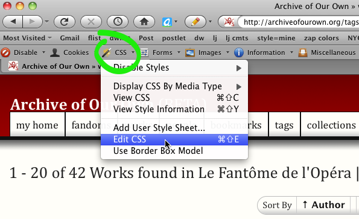
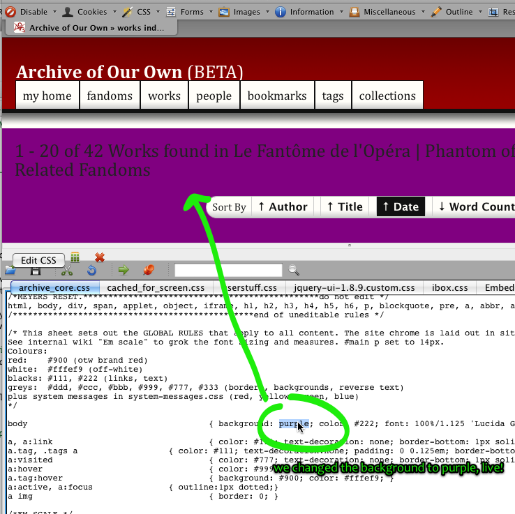

Here's the set of basic tools that we'll be using. Please install all of these, even if you have similar tools that you already like -- it will make life easier if we are all using the same set of tools.
In general, the way we will work on projects is to first get them working and looking good in Firefox, and then move to cross-browser compatibility towards release time, since this almost invariably involves putting in all sorts of kludginess.
One of the most valuable tools you can have for working on HTML/CSS is a browser plugin that lets you examine and edit the CSS of any web page "live" -- that is, rather than having to edit source code, save a file, and refresh the archive page every time you want to test some new change to CSS, you can just edit the CSS within your browser until you have it looking the way you want.
We recommend the Web Developer Toolbar, which runs in Firefox or Chrome (on any operating system where one of those browsers runs).
Once you have installed the toolbar, you will be able to edit the CSS of any page you are on with the Edit CSS option: 
This will open a window where you can edit any of the archive stylesheets live and see the results immediately: 
If you're working on Internet Explorer compatibility, the IE Developer Toolbar may be similarly useful.
Firebug is another browser extension that's a great tool for anyone working with JavaScript, HTML and CSS.
It's a Firefox-only extension that lets you edit, debug, and monitor CSS, HTML, and JavaScript live in any web page, in addition to being able to monitor network use, download sizes and JavaScript efficiency.
Scriptaculous is the JavaScript library that comes built in with Rails. This allows you to easily do all sorts of useful effects and also many silly ones. You don't actually need to know Javascript yourself -- just stick the library files in and learn a few basic patterns you can copy and paste, and off you go.
Whenever using JavaScript, you must remember to check what your pages look like when you have JavaScript disabled (hint: once you have Web Developer Toolbar installed, it lets you disable/enable Javascript easily) and make sure they still function. Scriptaculous effects degrade in an okay way out of the box, and we will be talking more about other ways to ensure accessibility along the way, but keep it in mind.
Even if you hate JavaScript, please go with us on this. Bad JavaScript makes baby unicorns cry! But when used right, it lets us make pages that are dramatically more usable and reduce load on our servers by doing some of the work in the user's browser.